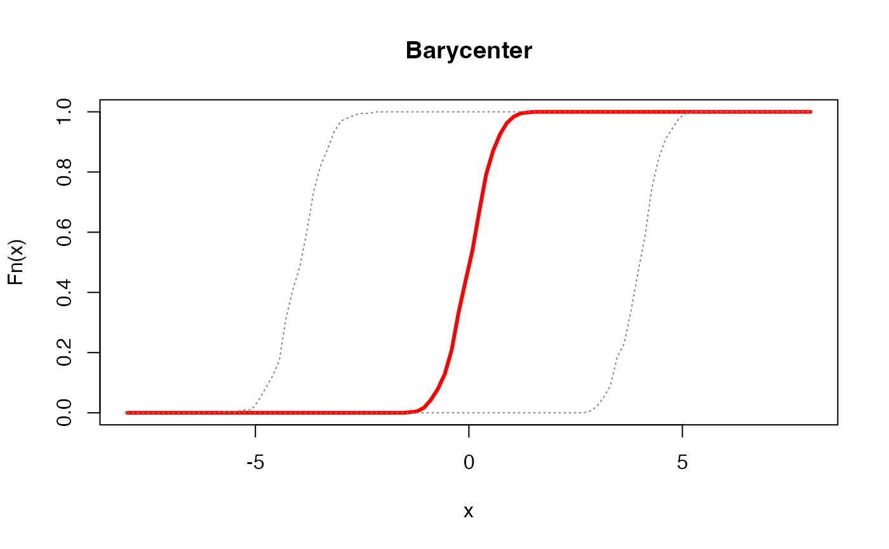

Barycenter of Empirical CDFs
ecdfbary.RdGiven a collection of empirical cumulative distribution functions \(F^i (x)\) for \(i=1,\ldots,N\), compute the Wasserstein barycenter of order 2. This is obtained by taking a weighted average on a set of corresponding quantile functions.
Arguments
- ecdfs
a length-\(N\) list of
"ecdf"objects by [stats::ecdf()].- weights
a weight of each image; if
NULL(default), uniform weight is set. Otherwise, it should be a length-\(N\) vector of nonnegative weights.- ...
extra parameters including
- abstol
stopping criterion for iterations (default: 1e-8).
- maxiter
maximum number of iterations (default: 496).
Examples
#----------------------------------------------------------------------
# Two Gaussians
#
# Two Gaussian distributions are parametrized as follows.
# Type 1 : (mean, var) = (-4, 1/4)
# Type 2 : (mean, var) = (+4, 1/4)
#----------------------------------------------------------------------
# GENERATE ECDFs
ecdf_list = list()
ecdf_list[[1]] = stats::ecdf(stats::rnorm(200, mean=-4, sd=0.5))
ecdf_list[[2]] = stats::ecdf(stats::rnorm(200, mean=+4, sd=0.5))
# COMPUTE THE BARYCENTER OF EQUAL WEIGHTS
emean = ecdfbary(ecdf_list)
# QUANTITIES FOR PLOTTING
x_grid = seq(from=-8, to=8, length.out=100)
y_type1 = ecdf_list[[1]](x_grid)
y_type2 = ecdf_list[[2]](x_grid)
y_bary = emean(x_grid)
# VISUALIZE
opar <- par(no.readonly=TRUE)
plot(x_grid, y_bary, lwd=3, col="red", type="l",
main="Barycenter", xlab="x", ylab="Fn(x)")
lines(x_grid, y_type1, col="gray50", lty=3)
lines(x_grid, y_type2, col="gray50", lty=3)

par(opar)